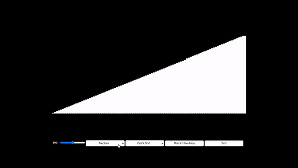
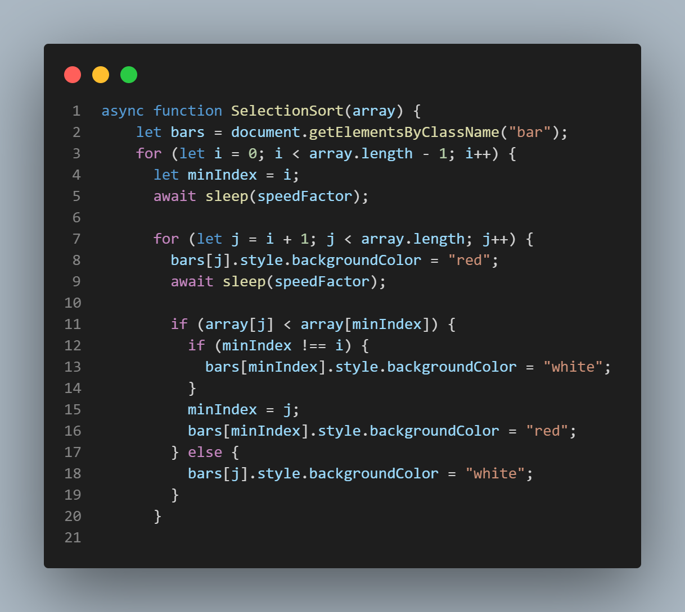
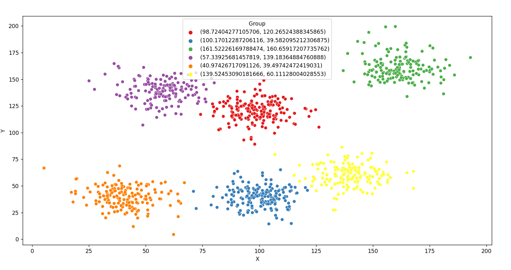
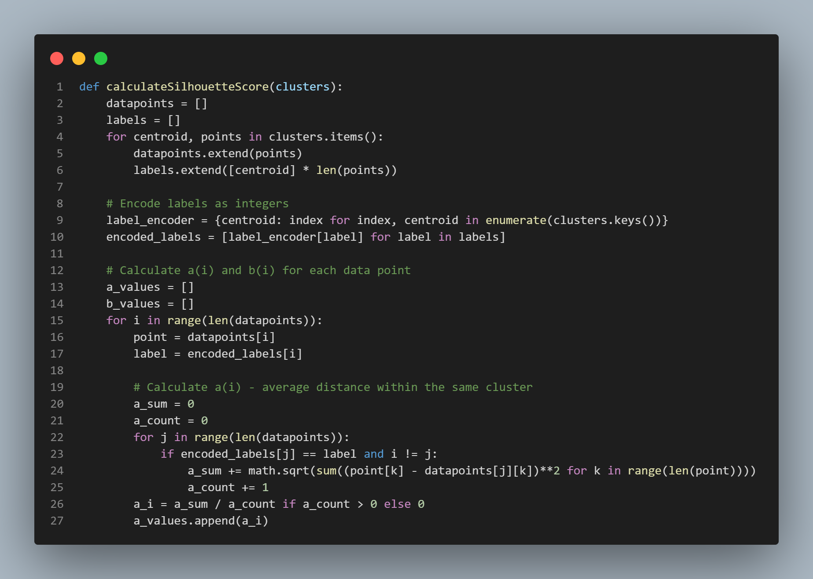
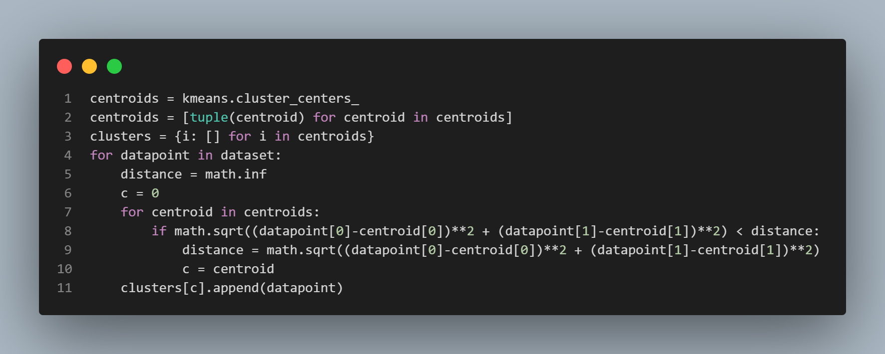

Algorithms
Sorting Visualizer
Languages: HTML, CSS, JavaScript
The Sorting Visualizer project is a web application built using HTML, CSS, and JavaScript. It provides an interactive and visual way to understand various sorting algorithms. The project utilizes a container that displays a set of bars representing elements of an array to be sorted. Each bar's height represents its value. Users can customize the size of the array, the sorting algorithm, the speed of the visualization and randomize the array. The available sorting algorithms include Bubble Sort, Insertion Sort, Heap Sort, Merge Sort, Quick Sort, Selection Sort, and Bucket Sort.

The bars are updated and showcase the live sort process with the red color.
All the sorting algorithms are wrote in JS, altering the html and style of the bars to properly
indicate the sorting.
Github source code: Sorting Visualizer
K-MEANS
Languages: Python
This project focuses on the implementation of the k-means clustering algorithm using Python. The project aims to determine the optimal value of k, which represents the number of clusters, for a given dataset. It utilizes the scikit-learn library, which provides efficient tools for clustering and data analysis, including the k-means algorithm. It also utilizes visualization libraries, like seaborn and matplotlib.
K-means clustering is a popular unsupervised machine learning technique used for grouping similar data points into clusters. The algorithm works by iteratively assigning each data point to the nearest cluster centroid and then recalculating the centroids based on the newly formed clusters. The process continues until convergence, where the assignments and centroids no longer change significantly. By varying the value of k, the algorithm generates different cluster configurations, and the optimal k value can be determined based on calculating the silhouette score.
The resulting clustered dataset provides valuable insights into the relationships and similarities among data points, enabling targeted analysis and decision-making. This information can be leveraged in various industries for segmentation, personalized strategies, and enhanced understanding of the dataset, ultimately empowering businesses to make data-driven decisions based on the optimal grouping of data points.

Github source code: K-MEANS
2. HackerRank

In Progress...